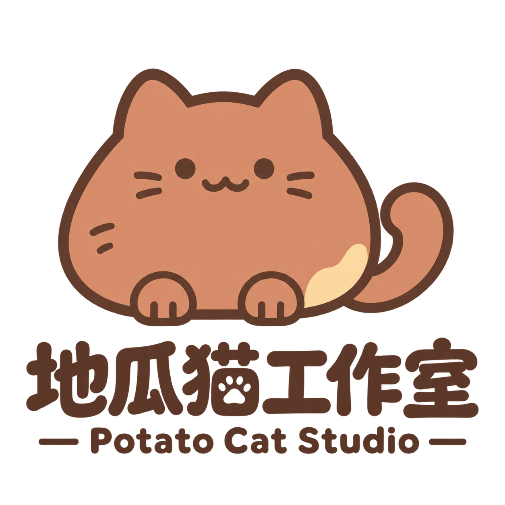

独立软件，让日常更顺手。
Thoughtful apps for everyday work.
RoveBox
为 Mac 打造的原生文件管理器，用页签、双栏和内置预览，让文件整理更顺手。
A native Mac file manager with tabs, dual panes, and built-in previews.
轻卷 / Scrolloom
iPhone 滚动长截图工具。
Scrolling screenshots on iPhone.

独立软件，让日常更顺手。
Thoughtful apps for everyday work.
为 Mac 打造的原生文件管理器，用页签、双栏和内置预览，让文件整理更顺手。
A native Mac file manager with tabs, dual panes, and built-in previews.
iPhone 滚动长截图工具。
Scrolling screenshots on iPhone.